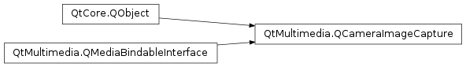

QCameraImageCapture¶
Synopsis¶
Functions¶
- def
availability() - def
bufferFormat() - def
captureDestination() - def
encodingSettings() - def
error() - def
errorString() - def
imageCodecDescription(codecName) - def
isAvailable() - def
isCaptureDestinationSupported(destination) - def
isReadyForCapture() - def
setBufferFormat(format) - def
setCaptureDestination(destination) - def
setEncodingSettings(settings) - def
supportedBufferFormats() - def
supportedImageCodecs()
Slots¶
- def
cancelCapture() - def
capture([location=”“])
Signals¶
- def
bufferFormatChanged(format) - def
captureDestinationChanged(destination) - def
error(id, error, errorString) - def
imageAvailable(id, frame) - def
imageCaptured(id, preview) - def
imageExposed(id) - def
imageMetadataAvailable(id, key, value) - def
imageSaved(id, fileName) - def
readyForCaptureChanged(ready)
Detailed Description¶
The
PySide2.QtMultimedia.QCameraImageCaptureclass is used for the recording of media content.The
PySide2.QtMultimedia.QCameraImageCaptureclass is a high level images recording class. It’s not intended to be used alone but for accessing the media recording functions of other media objects, likePySide2.QtMultimedia.QCamera.camera = new QCamera; viewfinder = new QCameraViewfinder(); viewfinder->show(); camera->setViewfinder(viewfinder); imageCapture = new QCameraImageCapture(camera); camera->setCaptureMode(QCamera::CaptureStillImage); camera->start(); //on half pressed shutter button camera->searchAndLock(); //on shutter button pressed imageCapture->capture(); //on shutter button released camera->unlock();See also
-
class
PySide2.QtMultimedia.QCameraImageCapture(mediaObject[, parent=nullptr])¶ Parameters: - mediaObject –
PySide2.QtMultimedia.QMediaObject - parent –
PySide2.QtCore.QObject
Constructs a media recorder which records the media produced by
mediaObject.The
parentis passed toPySide2.QtMultimedia.QMediaObject.- mediaObject –
-
PySide2.QtMultimedia.QCameraImageCapture.Error¶ Constant Description QCameraImageCapture.NoError No Errors. QCameraImageCapture.NotReadyError The service is not ready for capture yet. QCameraImageCapture.ResourceError Device is not ready or not available. QCameraImageCapture.OutOfSpaceError No space left on device. QCameraImageCapture.NotSupportedFeatureError Device does not support stillimages capture. QCameraImageCapture.FormatError Current format is not supported.
-
PySide2.QtMultimedia.QCameraImageCapture.DriveMode¶ Constant Description QCameraImageCapture.SingleImageCapture Drive mode is capturing a single picture.
-
PySide2.QtMultimedia.QCameraImageCapture.CaptureDestination¶ Constant Description QCameraImageCapture.CaptureToFile Capture the image to a file. QCameraImageCapture.CaptureToBuffer Capture the image to a buffer for further processing.
-
PySide2.QtMultimedia.QCameraImageCapture.availability()¶ Return type: PySide2.QtMultimedia.QMultimedia.AvailabilityStatusReturns the availability of this functionality.
-
PySide2.QtMultimedia.QCameraImageCapture.bufferFormat()¶ Return type: PySide2.QtMultimedia.QVideoFrame.PixelFormatReturns the buffer image capture format being used.
-
PySide2.QtMultimedia.QCameraImageCapture.bufferFormatChanged(format)¶ Parameters: format – PySide2.QtMultimedia.QVideoFrame.PixelFormat
-
PySide2.QtMultimedia.QCameraImageCapture.cancelCapture()¶ Cancel incomplete capture requests. Already captured and queused for proicessing images may be discarded.
-
PySide2.QtMultimedia.QCameraImageCapture.capture([location=""])¶ Parameters: location – unicode Return type: PySide2.QtCore.intCapture the image and save it to
file. This operation is asynchronous in majority of cases, followed by signalsQCameraImageCapture.imageExposed(),QCameraImageCapture.imageCaptured(),QCameraImageCapture.imageSaved()orQCameraImageCapture.error().If an empty
fileis passed, the camera backend choses the default location and naming scheme for photos on the system, if only file name without full path is specified, the image will be saved to the default directory, with a full path reported withPySide2.QtMultimedia.QCameraImageCapture.imageCaptured()andPySide2.QtMultimedia.QCameraImageCapture.imageSaved()signals.PySide2.QtMultimedia.QCamerasaves all the capture parameters like exposure settings or image processing parameters, so changes to camera parameters after is called do not affect previous capture requests.returns the capture Id parameter, used with
PySide2.QtMultimedia.QCameraImageCapture.imageExposed(),PySide2.QtMultimedia.QCameraImageCapture.imageCaptured()andPySide2.QtMultimedia.QCameraImageCapture.imageSaved()signals.
-
PySide2.QtMultimedia.QCameraImageCapture.captureDestination()¶ Return type: PySide2.QtMultimedia.QCameraImageCapture.CaptureDestinationsReturns the image capture destination being used.
-
PySide2.QtMultimedia.QCameraImageCapture.captureDestinationChanged(destination)¶ Parameters: destination – PySide2.QtMultimedia.QCameraImageCapture.CaptureDestinations
-
PySide2.QtMultimedia.QCameraImageCapture.encodingSettings()¶ Return type: PySide2.QtMultimedia.QImageEncoderSettingsReturns the image encoder settings being used.
-
PySide2.QtMultimedia.QCameraImageCapture.error()¶ Return type: PySide2.QtMultimedia.QCameraImageCapture.ErrorReturns the current error state.
-
PySide2.QtMultimedia.QCameraImageCapture.error(id, error, errorString) Parameters: - id –
PySide2.QtCore.int - error –
PySide2.QtMultimedia.QCameraImageCapture.Error - errorString – unicode
- id –
-
PySide2.QtMultimedia.QCameraImageCapture.errorString()¶ Return type: unicode Returns a string describing the current error state.
-
PySide2.QtMultimedia.QCameraImageCapture.imageAvailable(id, frame)¶ Parameters: - id –
PySide2.QtCore.int - frame –
PySide2.QtMultimedia.QVideoFrame
- id –
-
PySide2.QtMultimedia.QCameraImageCapture.imageCaptured(id, preview)¶ Parameters: - id –
PySide2.QtCore.int - preview –
PySide2.QtGui.QImage
- id –
-
PySide2.QtMultimedia.QCameraImageCapture.imageCodecDescription(codecName)¶ Parameters: codecName – unicode Return type: unicode Returns a description of an image
codec.
-
PySide2.QtMultimedia.QCameraImageCapture.imageExposed(id)¶ Parameters: id – PySide2.QtCore.int
-
PySide2.QtMultimedia.QCameraImageCapture.imageMetadataAvailable(id, key, value)¶ Parameters: - id –
PySide2.QtCore.int - key – unicode
- value – object
- id –
-
PySide2.QtMultimedia.QCameraImageCapture.imageSaved(id, fileName)¶ Parameters: - id –
PySide2.QtCore.int - fileName – unicode
- id –
-
PySide2.QtMultimedia.QCameraImageCapture.isAvailable()¶ Return type: PySide2.QtCore.boolReturns true if the images capture service ready to use.
-
PySide2.QtMultimedia.QCameraImageCapture.isCaptureDestinationSupported(destination)¶ Parameters: destination – PySide2.QtMultimedia.QCameraImageCapture.CaptureDestinationsReturn type: PySide2.QtCore.boolReturns true if the image capture
destinationis supported; otherwise returns false.
-
PySide2.QtMultimedia.QCameraImageCapture.isReadyForCapture()¶ Return type: PySide2.QtCore.bool
-
PySide2.QtMultimedia.QCameraImageCapture.readyForCaptureChanged(ready)¶ Parameters: ready – PySide2.QtCore.bool
-
PySide2.QtMultimedia.QCameraImageCapture.setBufferFormat(format)¶ Parameters: format – PySide2.QtMultimedia.QVideoFrame.PixelFormatSets the buffer image capture
formatto be used.
-
PySide2.QtMultimedia.QCameraImageCapture.setCaptureDestination(destination)¶ Parameters: destination – PySide2.QtMultimedia.QCameraImageCapture.CaptureDestinationsSets the capture
destinationto be used.
-
PySide2.QtMultimedia.QCameraImageCapture.setEncodingSettings(settings)¶ Parameters: settings – PySide2.QtMultimedia.QImageEncoderSettingsSets the image encoding
settings.If some parameters are not specified, or null settings are passed, the encoder choose the default encoding parameters.
-
PySide2.QtMultimedia.QCameraImageCapture.supportedBufferFormats()¶ Return type: Returns the list of supported buffer image capture formats.
-
PySide2.QtMultimedia.QCameraImageCapture.supportedImageCodecs()¶ Return type: list of strings Returns a list of supported image codecs.
© 2018 The Qt Company Ltd. Documentation contributions included herein are the copyrights of their respective owners. The documentation provided herein is licensed under the terms of the GNU Free Documentation License version 1.3 as published by the Free Software Foundation. Qt and respective logos are trademarks of The Qt Company Ltd. in Finland and/or other countries worldwide. All other trademarks are property of their respective owners.